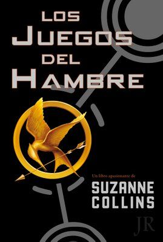

PDF
Los Juegos del Hambre
En una oscura versión del futuro próximo, doce chicos y doce chicas se ven obligados a participar en un reallity show llamado Los juegos del hambre. Solo hay una regla: matar o morir.
Cuando Katniss Everdeen, una joven de dieciséis años, se presenta voluntaria para ocupar el lugar de su hermana en los juegos, lo entiende como una condena a muerte. Sin embargo, Katniss ya ha visto la muerte de cerca y la supervivencia forma parte de su naturaleza.
¡Que empiecen los septuagésimo cuartos juegos del hambre!